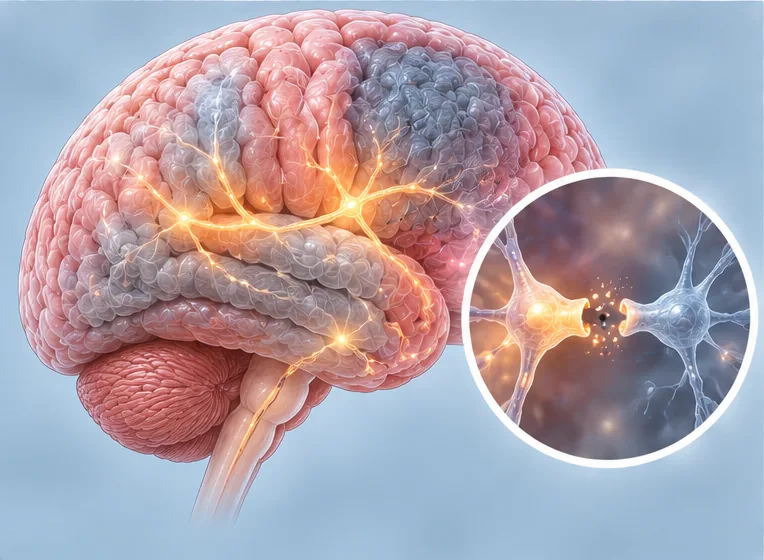

Gangguan mental
Keadaan kesihatan yang mengubah mood, pemikiran atau tingkah laku dan menyukarkan kehidupan harian
Apa itu
Istilah luas bagi keadaan kesihatan yang mengubah cara seseorang berasa, berfikir atau bertindak, seperti kemurungan atau keresahan. Ia masalah kesihatan sebenar, bukan kelemahan.
- Minda, mood dan tingkah laku
- Boleh berlaku pada semua umur
- Perubahan mood atau pemikiran
- Jumpa doktor
- Doktor keluarga, pakar psikiatri, ahli psikologi atau kaunselor
- Biasa pada
- Sesiapa sahaja pada mana-mana umur; ia biasa dan bukan tanda kelemahan
- Berjangkit
- Tidak
- Perjalanan
- Berbeza-beza; sokongan yang sesuai membantu ramai, ada yang perlu penjagaan lama
Tanda biasa

Mood murung, hilang minatMood murung 
Bimbang dan gelisahKebimbangan 
Tidak dapat tidurInsomnia 
Kabur fikiran, sukar fokusKurang tumpuan 
Mudah marahMudah marah
Mengapa ia berlaku

Diwarisi dalam keluargaKecenderungan genetik
Punca lain
- Selalunya gabungan beberapa punca, dan kadangkala puncanya tidak diketahui
- Tekanan jangka panjang, trauma, kehilangan, kesunyian, atau kebimbangan wang dan kerja
- Penyakit jangka panjang, kesakitan, kurang tidur, atau penggunaan alkohol dan dadah
- Perubahan besar dalam hidup, atau pengalaman sukar semasa kecil
Jumpa doktor dahulu jika
- Fikiran untuk mencederakan diri atau menamatkan nyawa: hubungi 999 atau ke hospital segera
- Fikiran untuk mencederakan orang lain, atau suara menyuruh berbuat demikian: hubungi 999
- Sangat keliru, atau nampak atau dengar perkara yang tidak wujud: jumpa doktor hari ini
- Tidak makan, minum atau tidur berhari-hari, atau tidak dapat menjaga diri sendiri
- Rasa putus asa, atau mood murung atau bimbang yang berlarutan beberapa minggu dan mengganggu hidup harian
Jika mana-mana berkenaan, sila jumpa doktor sebelum sesi.
Halaman ini ialah maklumat am. Sila terus mengambil ubat biasa anda dan terus berjumpa doktor.
Teruskan mengambil ubat biasa anda dan terus berjumpa doktor. Sesi kami ialah sokongan lembut dan tidak menggantikan rawatan perubatan.
Menjaga diri

Berbual dengan keluarga dan kawanSokongan sosial 
Tidur yang cukupTabiat tidur yang baik
Lebih banyak cara menjaga diri
- Kurangkan alkohol dan elakkan dadah; ia boleh memburukkan keadaan
- Jumpa doktor awal dan hadiri temujanji anda
- Jika anda mengambil ubat, tanya doktor atau ahli farmasi sebelum mengubah atau menghentikannya
Beritahu ahli terapi anda
- Kehamilan
- Epilepsi atau sawan
- Perentak jantung atau implan logam
Ahli terapi anda akan menyemaknya bersama anda sebelum bermula.
Soalan dan jawapan
Apakah Gangguan mental?
Keadaan kesihatan yang mengubah mood, pemikiran atau tingkah laku dan menyukarkan kehidupan harian. Istilah luas bagi keadaan kesihatan yang mengubah cara seseorang berasa, berfikir atau bertindak, seperti kemurungan atau keresahan. Ia masalah kesihatan sebenar, bukan kelemahan.
Apakah tanda biasa Gangguan mental?
Mood murung, hilang minat · Bimbang dan gelisah · Tidak dapat tidur · Kabur fikiran, sukar fokus · Mudah marah
Mengapa Gangguan mental berlaku?
Diwarisi dalam keluarga
Bagaimana menjaga diri dengan Gangguan mental?
Berbual dengan keluarga dan kawan · Tidur yang cukup
Bolehkah sesi AI Body Master membantu Gangguan mental?
Sesi ialah sokongan meridian tanpa jarum yang lembut untuk kesejahteraan anda. Ia tidak merawat atau menyembuhkan Gangguan mental dan tidak menggantikan ubat atau doktor anda. Beritahu ahli terapi anda sebelum sesi bermula.
Keadaan berkaitan
Rujukan: General information based on public health sources such as Mayo Clinic, NHS, Cleveland Clinic and NCBI StatPearls.
Halaman dikemas kini: 2026-11-05